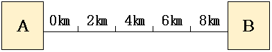

어떤 도시에 쇼핑센터 A, B가 있다. 두 쇼핑센터간 거리는 8㎞이다. A의 면적은 1,000㎡이고, B의 면적은 9,000㎡이다. 컨버스의 분기점 모형에 따른 두 쇼핑센터의 상권 경계선은 어디인가? (컨버스의 분기점 모형에 따르면, 상권은 거리의 제곱에 반비례하고, 상가의 면적에 비례한다.)

① A로부터 1km 지점
② A로부터 2km 지점
③ A로부터 4km 지점
④ A로부터 6km 지점
⑤ A로부터 7km 지점
| Ｏ | Ｘ | Ｖ | ？ | ☆ | Ｔ |